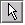
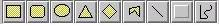

By default, the toolbar has the selection tool activated. This tool allows components on the development pane to be selected with mouse clicks.
Selected components can be dragged to new positions with the mouse.
The connected label tool behaves exactly like the label tool except that if the text is initially placed on a component, the text will always follow that component if it is moved.
The text can be moved relative to the component by clicking on and dragging the text.

Drawing tools allow images and lines to be placed on the development pane that have no effect on the network.
These are saved along with the neural network components.
Placing a drawing tool item on the development pane is slightly different to other components because the item has to be initially sized. After clicking to select the required drawing tool, click on the development pane and drag the mouse diagonally to draw the item. Drawing tool items can be resized at a later date.
Rectangle
This drawing item draws a rectangular figure.
Round Rectangle
This drawing item draws a rectangular figure with rounded edges.
Ellipse
This drawing item draws an elliptical figure.
Triangle
This drawing item draws an triangle figure.
Diamond
This drawing item draws an diamond figure.
Polygon
This drawing item draws a polygon figure. Left click to select points , double click to finalise polygon.
Line
This drawing item draws a line. It is not possible to associate the end of a line with a component.
3d Box
This drawing item draws a 3d outline around another shape that has been created with one of the drawing tools or labels.
Scribble
This drawing item draws a scribbled figure.